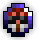
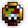
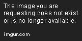
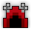

The Abyss of Demons is part of the Standard Quest pool from The Tinkerer and has five associated quests, including a scout quest.
| Name | Description | Items Needed | Reward |
|---|---|---|---|
| Scout the Abyss | Scout the Abyss of Demons and report back here! |  |
 |
| The Archdemon | Defeat Malphas in the Abyss of Demons. | |
 |
| To the Mountains! | Head to the mountains to take down Oryx’s generals! |      |
|
| Demonhunter | I don’t think Holy Water will cut it for these ones! |  |
|
| Rainbow Road | Bring me some marks while you search for stat potions! | |
When clearing through the Abyss, be patient. The enemies in this dungeon can easily swarm you if you aren’t careful, and if you are cornered, you will have to nexus or die. Avoid lava at all costs, as they slow you down and deal damage if you try to swim in it.
If you want to rush through however, keep on the lookout for enemies, the environment and your minimap. If you hit a dead end or get cornered, you will have to deal with the enemies behind you, which can kill you easily if you are not tanky enough. Do not rush if you are inexperienced, as you will most certainly die trying.
The room layouts in the Abyss can screw you over when you are trying to map read. A good tip is to loosely move towards the boss room, taking the paths that have a high chance of going to the boss room. With enough experience, you will gain the instinct to take the right path most of the time.
Once you reach the boss room, take your time to kill off the White Demons defending the area. While not necessary in a large group or with high DPS, taking them down reduces the distraction throughout the fight. Once you’re done with that, walk through the middle of the room and activate Malphas. His attacks may seem intimidating, but they are patterned. Take your time to analyze the patterns, as it will help you dodge attacks much better.
Rarely, you may find the treasure room in the Abyss, indicated by the unique entrance to the room. If you find one, clear the minions inside first before taking on the Abyss Idol in the middle, as you cannot return back until it is defeated. However, if you are not confident with your skills, you can avoid this fight for now and kill Malphas first, then you can return here and try. Its attacks are quite scary and dangerous because of the Paralyze shots and the lava that appears throughout the fight. Avoid all of those at all costs and take the Idol down with your weapon and ability.
The Abyss of Demons was one of the first dungeons to be added around Build 74 (Feb 2010).
The old abyss map design sometimes had flaws where Malphas the boss was unreachable.

As of Build 123.3, Treasure Rooms have gotten the chance of appearing in this dungeon. These rooms contain a “Mini-Boss”: the Abyss Idol.
In Release ????, Potions of Defense were added as a guaranteed drop from Archdemon Malphas and the Abyss Idol. As of Patch 27.7.X6 (Oct 2016), the bosses were no longer guaranteed to drop a Potion of Defense. Instead, the Toxic Sewers took the Abyss of Demons’ place as the main source of Potions of Defense among the Godlands dungeons.
In Exalt Version 1.1.0.0 (Sep 2020), this dungeon received a significant rework for MotMG 2020. For more information about what the dungeon was previously, see here.
Before Exalt Version 1.1.0.0 (Sep 2020), the sprite originally looked like this:

Before Exalt Version 5.11.0.0 (May 2025), dungeon completion gave 23-55  with 60% chance.
with 60% chance.
Before Exalt Version 5.12.0.0 (June 2025), dungeon completion gave 30-36  .
.
Back when White Demons dropped Abyss Portals, the White Demons in the Abyss had a chance of dropping a portal, which lead to some players running “Abyssceptions”.
Several statues throughout the dungeon are references to demons and other things, including: